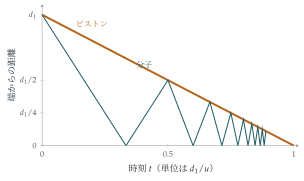

STEP I 2002、第10問
先に進む前に問題を読んでおこう。問題は STEP Support Programme の問題データベースにある： step.maths.org/questions/02-s1-q10
導入
自転車のタイヤに空気を入れたあと、空気入れに触れてみると熱くなっている。気体は圧縮すると温まる。これはディーゼルエンジン（燃料を圧縮だけで点火する）、冷蔵庫、そして星の形成の背後にある原理である。では、なぜ圧縮すると気体は熱くなるのだろうか。温度とは分子の運動エネルギー（kinetic energy）の平均であるから、問いは「なぜ分子は速くなるのか」ということになる。
この問題は、ただ一つの分子を使ってこの問いに答える。分子は前進してくるピストン（piston）に跳ね返されるたびに、動いているラケットに打ち返されたテニスボールと同じように、少しずつ速さを増す。跳ね返りを正確に追っていくと、隠れた法則が現れる。分子の速さとシリンダーの長さの積が、ほぼ一定に保たれるのである。これは断熱不変量（adiabatic invariant）と呼ばれる量であり、物理で学ぶ気体の法則の微視的な起源となっている。
取りかかる前に
速さ \(w\) で動くボールが、速さ \(u\) でこちらに向かって動いてくる壁に当たり、弾性的に（elastically）跳ね返る。跳ね返ったあとの速さはいくらか。（壁とともに動く座標系（frame）で考えよ。）
壁の座標系では、ボールは \(w + u\) で近づき、非常に重い物体に弾性的に跳ね返されるので \(w + u\) で離れていく。地面の座標系に戻ると、壁は跳ね返ったボールと同じ向きに \(u\) で動いているから、ボールの速さは \(w + 2u\) となる。前進するピストンに跳ね返されるたびに、速さは \(2u\) ずつ増えるのである。（静止しているシリンダーの端で跳ね返っても、速さは変わらない。）
順を追って解く
段階 1 \(n\) 回跳ね返ったあとの速さ
粒子ははじめ速さ \(v\) である。ピストンとの衝突のたびに \(2u\) が加わり、端との衝突では速さは変わらない。よって、ピストンと \(n\) 回衝突したあとの速さは \[v_n = v + 2nu. \qed\]
段階 2 長さについての漸化式
\(n\) 回目と \((n+1)\) 回目の衝突の間に、粒子はピストンから端まで行って戻ってくる。粒子が進む距離はいくらか。ピストンが動く距離はいくらか。
時間 \(t_n\) の間にピストンは \(ut_n\) だけ動くので、\(d_n - d_{n+1} = ut_n\) である。その間に粒子は速さ \(v_n\) で、ピストンから端まで（距離 \(d_n\)）進み、そこからピストンまで（距離 \(d_{n+1}\)）戻る。よって \(d_n + d_{n+1} = v_nt_n\) である。一方の式を他方で割ると \(t_n\) が消去され、漸化式（recurrence） \[\frac{d_n + d_{n+1}}{d_n - d_{n+1}} = \frac{v_n}{u}, \qquad\text{よって}\qquad d_{n+1}(v_n + u) = d_n(v_n - u).\] が得られる。\(v_n = v + 2nu\) を代入すると \[d_{n+1} = \frac{v + (2n - 1)u}{v + (2n + 1)u}\,d_n. \qed\]
段階 3 次々に打ち消し合う積
\(d_n\) を、\(d_1\) にこのような分数 \(n - 1\) 個の積を掛けた形で書け。何が約分されるか。
\[d_n = d_1 \cdot \frac{v + u}{v + 3u}\cdot\frac{v + 3u}{v + 5u}\cdots\frac{v + (2n - 3)u}{v + (2n - 1)u} = \frac{v + u}{v + (2n - 1)u}\,d_1. \qed\] 各分子が直前の分母と約分され、最初の分子と最後の分母だけが残る。このように次々と打ち消し合う計算を、テレスコーピング（telescoping）という。
段階 4 \(v = u\) の場合
このとき \(d_n = \frac{2u}{2nu}d_1 = \frac{d_1}{n}\) であり、 \[ut_n = d_n - d_{n+1} = d_1\Bigl(\frac1n - \frac{1}{n + 1}\Bigr) = \frac{d_1}{n(n + 1)}. \qed\] これらを足し合わせると \(u(t_1 + t_2 + \cdots) = d_1\bigl(1 - \frac12 + \frac12 - \frac13 + \cdots\bigr) = d_1\) となる。つまり、ピストンは最初の衝突から時間 \(d_1/u\) でシリンダーの端に到達する。当然そうでなければならない。そこに到達するまでに、粒子は無限回跳ね返るのである（図 10.4.1）。

振り返り
衝突は座標系を変えて考える。 ピストンの座標系では、跳ね返りは自明である。
二つの式を立て、未知数を消去する。 同じ時間に粒子とピストンが進む距離から、\(t_n\) を含まない漸化式が得られた。
テレスコーピング。 \(\frac{1}{n(n+1)}\) の和と同様に、積が一気につぶれた。
背後にある数学
断熱不変量
速さに長さを掛けてみよう。 \[v_n d_n = (v + 2nu)\cdot\frac{v + u}{v + (2n - 1)u}\,d_1 \approx (v + u)d_1\] が、\(n\) が大きいとき、あるいは \(u\) が \(v\) よりはるかに小さいときに成り立つ。したがって \[\text{速さ} \times \text{長さ} \approx \text{一定}.\] ピストンが分子に比べてゆっくり動くならば、ピストンがどれだけ動いても積 \(vd\) はほとんど変化しない。このように、系をゆっくり変化させたときにほぼ一定に保たれる量を断熱不変量という。一般に、往復運動の断熱不変量は \(\oint p\,\mathrm{d}q\)、すなわち運動量を一周期にわたって積分したものである。ここではそれは \(mv \times 2d\) となる。
一つの分子から気体へ
\(v \propto 1/d\) であるから、運動エネルギー \(\frac12mv^2\) は \(1/d^2\) に比例する。多数の分子が一方向に沿って運動する気体では、温度は運動エネルギーの平均に比例するので \(T \propto 1/d^2\) となる。つまり、長さを半分にすると温度は 4 倍になる。三次元では、エネルギーは三つの運動方向に分配され、同じ議論（ファインマン（Feynman）が講義録で述べているもの）によって、単原子気体の断熱圧縮の法則 \[TV^{2/3} = \text{一定}, \qquad\text{すなわち}\qquad pV^{5/3} = \text{一定}.\] が導かれる。指数 \(\frac53\) は、単原子気体の比熱比 \(\gamma\) として知られる値である。自転車の空気入れの中の空気を体積の 5 分の 1 まで、素早く、熱が逃げないように圧縮したとすると、絶対温度は \(5^{0.4} \approx 1.9\) 倍になる（空気の分子は二原子分子なので、代わりに \(\gamma = 1.4\) となる）。つまり \(20^\circ\)C から約 \(280^\circ\)C になる。空気入れがそこまで熱くならないのは、圧縮がゆっくりで、熱が逃げていくからにすぎない。
1949 年、エンリコ・フェルミ（Enrico Fermi）は、宇宙から莫大なエネルギーをもって飛来する粒子である宇宙線が、まさにこの問題の分子と同じしくみで加速されていると提唱した。すなわち、星間ガス雲の中を動く磁場に何度も跳ね返され、そのたびに少しずつエネルギーを得るというのである。現在では、この「フェルミ加速」は超新星残骸の衝撃波で起こっていると考えられている。そこでは粒子が、ピストンと壁の間を行き来する分子のように、衝撃波を何度も往復して横切る。断熱不変量は量子力学の誕生にも一役買った。1916 年、パウル・エーレンフェスト（Paul Ehrenfest）は、ゆっくりとした変化によって系が量子状態の間を飛び移ることはありえないから、量子化される量は断熱不変量でなければならないと論じたのである。
思考のスキル
過程が繰り返されるときは、一周期を正確に記述し、ある周期から次の周期へ状態がどう変わるかを書き下せ。
ここでの状態は、各衝突における（速さ、長さ）の組であった。漸化式は厳密に解くことができ、その解からほぼ保存される量が明らかになった。大学では、同じ方法（一周期を調べ、漸化式あるいは「回帰写像」を作る）が、軌道、振動子、そして第 8.7 節の反復写像に用いられる。
次の一歩
不変量を厳密に。 \(v_nd_n - (v + u)d_1 = \frac{u(v + u)d_1}{v + (2n - 1)u}\) を示し、\(n \to \infty\) のとき \(v_nd_n \to (v + u)d_1\) となることを導け。
ピストンを引き抜く。 ピストンを速さ \(u < v\) で引き抜く場合について、問題を考え直せ。粒子が遅くなることを示し、\(v_nd_n\) を求めよ。（膨張する気体は冷える。）
エネルギー。 \(v = u\) の場合、ピストンが端に近づくにつれて分子の速さは限りなく大きくなる。\(n\) 番目の周期の間にピストンにはたらく平均の力（運動量の変化を \(t_n\) で割ったもの）を求め、それが \(n^3\) のように増大することを示せ。このことは、ピストンを最後まで押し込むのに必要な仕事について何を意味するか。
弾むボール。 重力のもとで床の上を弾性的に弾むボールがあり、床をゆっくりと持ち上げていく。この運動の断熱不変量を推測せよ。（ヒント：\(vd\) に相当するのは、平均の速さと跳ね上がる高さの積、あるいは同じことだが、エネルギーと跳ね返りの間の時間の積である。）
さらに学ぶために
Richard Feynman, Robert Leighton & Matthew Sands, The Feynman Lectures on Physics, Vol. I（『ファインマン物理学』、オンラインで無料公開）、第 39 章「The kinetic theory of gases」（気体分子運動論）。同じピストンの議論を三次元に拡張している。
Stephen Blundell & Katherine Blundell, Concepts in Thermal Physics（Oxford University Press、熱物理学の入門書）。断熱過程と気体分子運動論を大学 1 年生の水準で扱っている。
Lev Landau & Evgeny Lifshitz, Mechanics（Butterworth-Heinemann、ランダウ＝リフシッツ『力学』）、§49。断熱不変量の簡潔な解説。もう少し先で読むとよい。